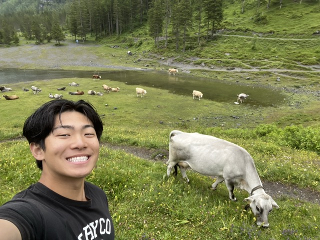

Ways I like to spend my free time away from computers
I'm passionate about fitness and strength training. Weightlifting has become a cornerstone of my daily routine, helping me maintain physical health and mental discipline. I enjoy the challenge of progressive overload and the satisfaction of hitting new personal records.

I have a deep interest in automotive engineering and car culture. From understanding engine mechanics to appreciating design aesthetics, cars represent the perfect blend of engineering and art. I enjoy learning about different makes, models, and the technology that drives modern vehicles.
Cooking is my creative outlet and a way to experiment with flavors and techniques. I enjoy trying new recipes, understanding the science behind cooking, and sharing meals with friends and family. It's a perfect balance of precision and creativity.